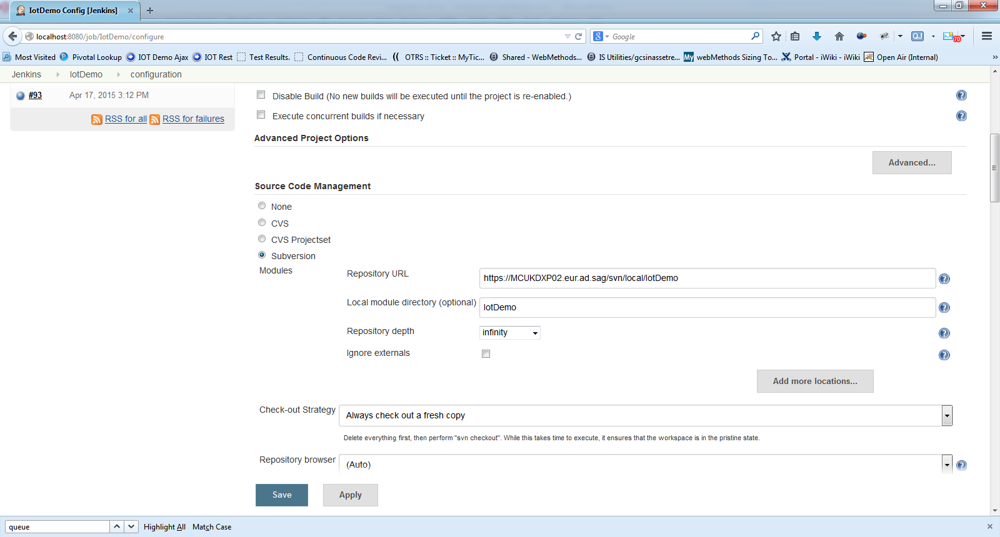
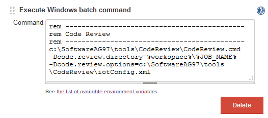
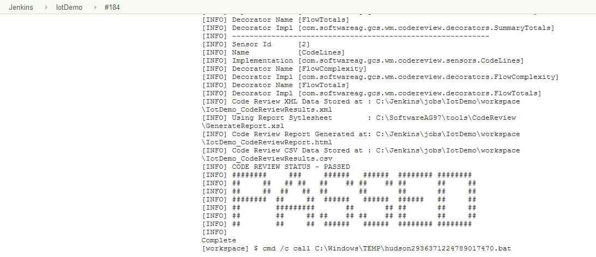

Continuous Integration (CI) Server
Pre-requisites
- Installation and Configuration of a suitable CI tool (e.g Jenkins)
- Modification of the CodeReview.cmd as detailed here
Implementation
After following the installation notes, and ensuring the pre-requisites are complete, you can configure the code review engine in a CI Process as follows
Extract the Package Source code from source repository
- Extract the package files from source control using the CI tools functionality, e.g. 
Create the job configuration
- Use an excute batch command (windows) or shell (linux) to execute the code review, e.g. 
Note
In this example the %workspace%\%JOB_NAME% parameter is provided as the path to the code and an override options file along with the other mandatory parameters
Build
- Run the build job and examine the output 
Publish JUnit report
- Publish the generated JUnit report to provide history